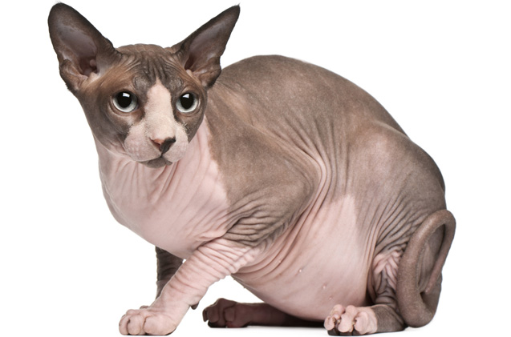
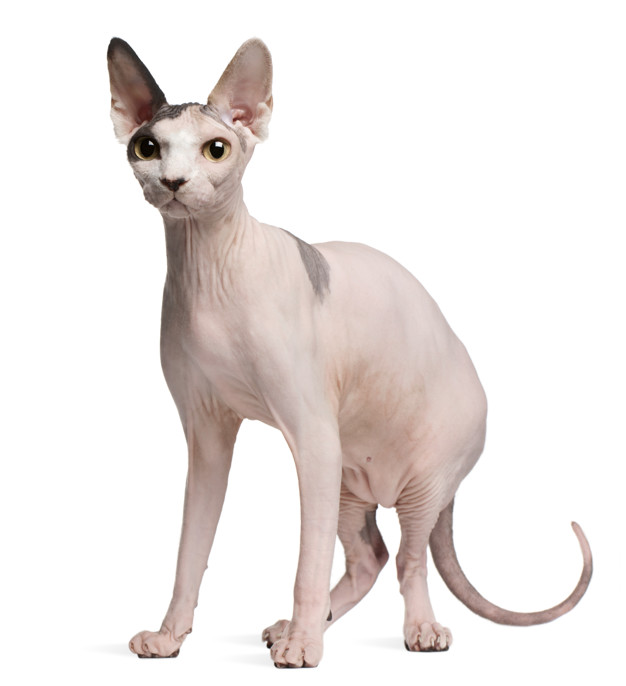

SPHYNX
Conheça o Sphynx:
Impossível falar sobre o Gato Sphynx e não começar por sua característica mais marcante: seu temperamento. Brincadeiras à parte, a raça Sphynx é considerada uma das mais exóticas devido a sua aparência extremamente peculiar. Seu rosto mais afinado com olhos grandes, orelhas pontudas e seu corpo sem pelos visíveis podem até causar certa estranheza em um primeiro momento. Apesar da singularidade estética, o Sphynx tem um comportamento bem normal em comparação a maioria dos gatos: é bem afetuoso, brincalhão, mas o grande destaque vai para seu jeitão desastrado e atrapalhado; e como também é bem agitado, eles adoram atividades recreativas e pular - e muito. Sua origem é consideravelmente recente. Conta-se que no ano de 1966 em Ontário (Canadá) nasceu, em uma ninhada de gatinhos, um filhote totalmente nu. Na ninhada seguinte dessa mesma gata, veio mais um filhotinho pelado: depois de grandinhos, os gatos “pelados” cruzaram e deram origem a uma nova raça felina. O primeiro nome dado foi Moon’s Cat (Gato da Lua), mas logo depois mudou para Canadian Naked (Canadense Nú), até que finalmente recebeu o nome que conhecemos hoje como Sphynx.
Características:
O sphynx tem orelhas grandes e cauda longa e fina. Sua principal característica é a falta de pelagem e bigode e pele enrugada, o que pode assustar algumas pessoas na primeira impressão. Por causa da falta de pelos, ele precisa de banhos semanais para retirar a oleosidade da pele que não é absorvida e pode se tornar acumulador de pó. Por causa da ausência de bigodes é um pouco desajeito e deve evitar áreas altas.
Personalidade:
De tão afetuoso e apegado ao dono pode se tornar possessivo. Gosta de ser mimado, é inteligente, sociável e brincalhão. Quando ele não está recebendo atenção, costuma explorar o ambiente, caçar insetos e brincar com objetos que desafiem seu físico e mente.
Entenda sobre a saúde do Sphynx:
Por ter dermatites com maior frequência, é muito importante deixar as visitas de rotina ao veterinário em dia, mas caso você perceba alguma feridinha no seu pet, é necessário realizar uma visita de urgência ao veterinário.
Atividades recomendadas para o Sphynx:
Os gatos Sphynx são muito ativos e sensíveis ao frio: por esse motivo, busque sempre mantê-lo em locais mais quentinhos e, para entretê-lo, invista em petiscos, arranhadores e muitos brinquedos. Curiosidades:
Pelado, mas nem tanto:
Muitos acham que o Sphynx é completamente pelado, mas é possível perceber uma camada de pelos curtinhos e finos...quase invisível, porém não é um gato sem pelos.
Hipoalergênico?
Muita gente realmente acredita que a raça é sem pelos é hipoalergênica, mas isso é uma lenda urbana.
Estrela de Cinema:
A trilogia de comédia, Austin Powers, conta com um Sphynx como mascote do vilão, Doctor Evil.